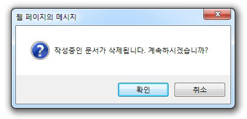

파일
새 문서
현재 작업중인 문서를 새로운 문서로 대체합니다.

01편집 중일 경우 작성 중인 내용의 삭제 여부 선택 후 새 문서가 열립니다.
02편집 중인 내용이 없을 경우 바로 새문서가 열립니다.
파일 열기
선택한 파일의 내용을 가져 올 수 있습니다. (*지원 확장명: html, htm, txt)

01편집 중일 경우 작성 중인 내용의 삭제 여부 선택 후 선택한 파일의 내용이 나타납니다.
02편집 중인 내용이 없을 경우 바로 선택한 파일의 내용이 나타납니다.
템플릿 열기
기존에 저장되어 있는 Template을 사용자가 사용할 수 있도록 도와줍니다.
01기존에 저장해 놓은 Template 목록을 보여줍니다.
02사용자가 선택한 파일을 Editor에 나타내줍니다.
레이아웃
문서 레이아웃을 사용하여 편리하게 문서작성을 할 수 있도록 도와줍니다.
저장
작업중인 내용을 사용자 컴퓨터에 특정파일로 저장합니다.
자동저장내용 불러오기
에디터에서 자동저장되어 있던 html 내용을 에디터에 불러옵니다.
(자동저장된 내용이 있을 경우 이 아이콘이 활성화 됩니다.)
자동저장 설정은 환경설정 에서 하실 수 있습니다.
인쇄
사용자의 컴퓨터에 설정되어 있는 프린터로 Editor의 내용을 인쇄합니다.
페이지 분할
인쇄할 때 분할한 페이지대로 인쇄합니다.
워드로 편집
Microsoft Word의 UX에 익숙한 사용자를 위하여 제공되는 기능으로, K Editor에서 작성중인 컨텐츠를 Microsoft Word와 호환하여
작성할 수 있는 기능입니다.
※ 주의사항
1) K Editor의 동작모드가 Agent 일 경우만 사용가능 합니다.
2) PC에 Microsoft Word가 설치되어 있어야 합니다.
3) PC에 문서 DRM(Digital Rights Management)을 사용중인 경우 별도의 기술지원이 필요할 수 있습니다.